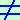
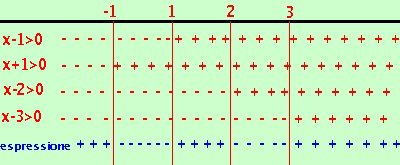

|
risolviamo la disequazione: x4 - 5x3 + 5x2 + 5x - 6 > 0 Considero il polinomio associato x4 - 5x3 + 5x2 + 5x - 6 = devo scomporlo in fattori; sono 5 termini, non riesco a fare dei raggruppamenti, quindi applico la scomposizione di Ruffini provo a scomporre per: (x-1), P(1)= 14 -5·13 +5·12 +5·1 - 6 = 1 - 5 + 5 - 5 + 6 = 0 quindi (x-1) e' un fattore: divido per (x-1) faccio la divisione di Ruffini
Ottengo quindi x4 - 5x3 + 5x2 + 5x - 6 = (x-1)(x3 -4x2 + x + 6) = Continuo la scomposizione del secondo fattore: sono 4 termini:
provo a scomporre per (x-1), P(1)= 13 -4·12 + 1 - 6 = 1 - 4 + 1 + 6  0 (x+1), P(1)= (-1)3 -4·(-1)2 +(-1) - 6 = -1 - 4 - 1 + 6= 0 Quindi (x+1) e' un fattore; divido per (x+1)
quindi ottengo x4 - 5x3 + 5x2 + 5x - 6 = (x-1)(x3 -4x2 + x + 6) = (x-1)(x+1)(x2-5x+6) Ora devo decidere se voglio fare la disequazione con fattori di primo e secondo grado oppure solo con fattori di primo grado scomponendo anche l'ultimo fattore tra parentesi. Un metodo vale l'altro: per scomporre l'ultimo termine posso applicare la scomposizione del trinomio notevole, cioe' x2-5x+6=(x-2)(x-3) e quindi avro': x4 - 5x3 + 5x2 + 5x - 6 = (x-1)(x+1)(x-2)(x-3) > 0 poniamo ogni fattore maggiore di zero
 Adesso riporto i risultati su un grafico indicando con un un + dove ogni disequazione e' verificata e con un - dove non e' verificata e faccio il conto dei segni: devo prendere gli intervalli dove il prodotto dei segni dei fattori (cioe' il segno dell'espressione) risulta positivo. Ottengo come risultato: x < -1 U 1 < x < 2 U x > 3 |